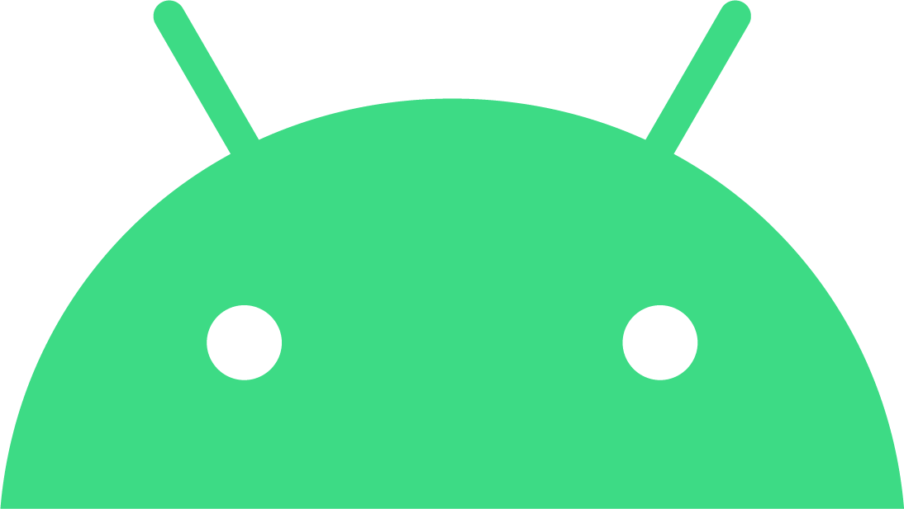
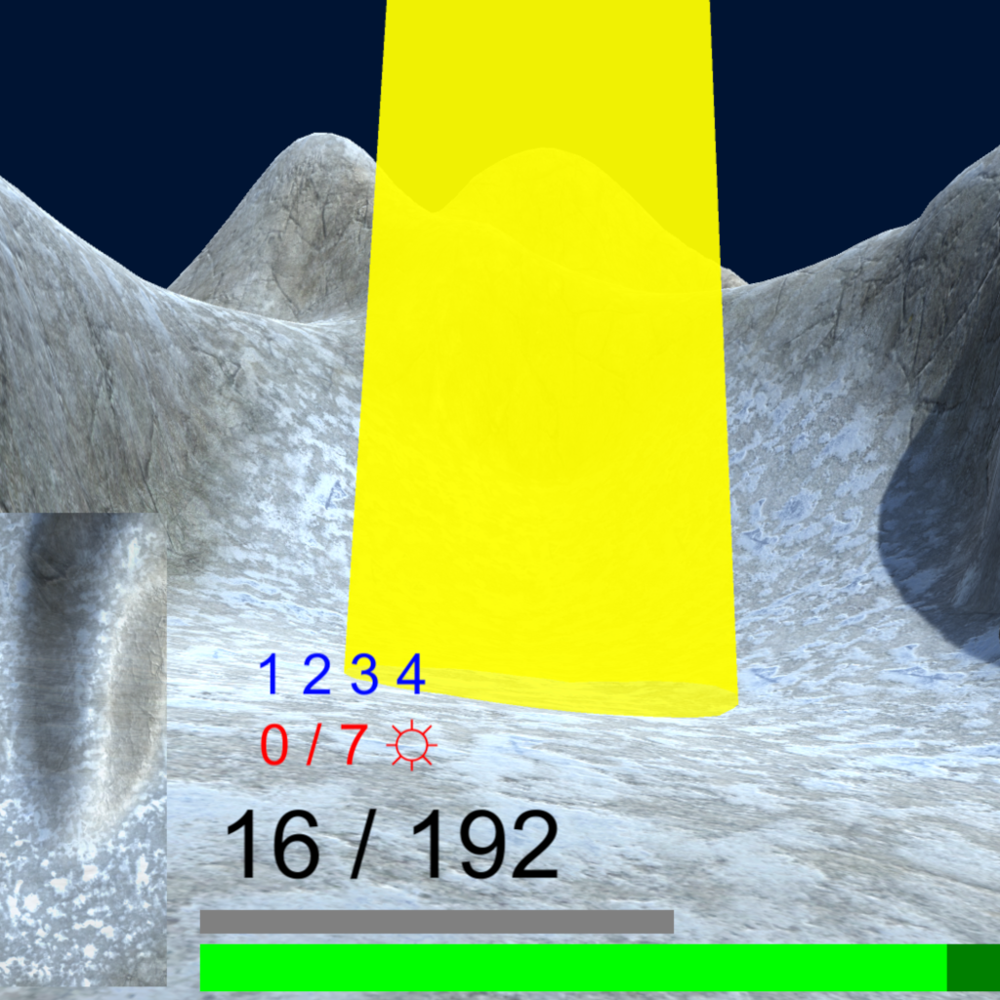

Sóc en Jordi Mas, un apassionat programador amb experiència en Angular, CSS, Javascript, C# i Python, entre altres. En aquesta web, trobaràs informació sobre la meva experiència, habilitats i projectes, així com la meva informació de contacte perquè puguem conversar sobre com et puc ajudar amb el teu proper projecte. Soy Jordi Mas, un apasionado programador con experiencia en Angular, CSS, Javascript, C# y Python, entre otros. En esta web, encontrarás información sobre mi experiencia, habilidades y proyectos, así como mi información de contacto para que podamos conversar sobre cómo puedo ayudarte con tu próximo proyecto. I am Jordi Mas, a passionate programmer with experience in Angular, CSS, Javascript, C# and Python, among others. On this site, you'll find information about my past experience, skills, and projects, as well as my contact information so we can discuss about how I can help with your next project.
In2art
Principal desenvolupador d'una xarxa social a In2Art. Vaig ser responsable del frontend, disseny i part del backend.
A més, estic orgullós de dir que vaig desenvolupar la pàgina des de zero utilitzant la meva experiència a Angular, CSS i TypeScript.
La primera part del projecte, quan vaig fer l'estructura i l'organització del frontend, la vaig desenvolupar en solitari. A mesura que la web va anar creixent i es van afegir noves seccions, vaig poder dividir la càrrega de treball entre estudiants de pràctiques als que jo mateix vaig formar en Angular, TypeScript i CSS. Junts vam treballar en equip per crear una veritable obra d'art.
Principal desarrollador de una red social en In2Art. Fui responsable del frontend, diseño y parte del backend.
Además, estoy orgulloso de decir que desarrollé la página desde cero utilizando mi experiencia en Angular, CSS y TypeScript.
La primera parte del proyecto, cuando hice la estructura y organización del frontend, la desarrollé en solitario. A medida que la web fue creciendo y se añadieron nuevas secciones, pude dividir la carga de trabajo entre estudiantes de prácticas a los que yo mismo formé en Angular, TypeScript y CSS. Juntos, trabajamos en equipo para crear una verdadera obra de arte.
Main developer of a social network at In2art. I was responsible for the frontend, design and part of the backend.
Also, I'm proud to say that I built the page from scratch using my experience in Angular, CSS, and TypeScript.
The first part of the project, when I did the structure and organization of the frontend, I developed it alone. As the web grew and new sections were added, I splitted the workload among interns I trained myself in Angular, TypeScript, and CSS. Together, we worked as a team to create a true work of art.
Matic
Durant la meva experiència laboral a Matic Enginyeria Informàtica, vaig ser responsable de programar tant el frontend com el backend d'un sistema CRM dissenyat per a la gestió de clients, manteniments i molls de càrrega de l'empresa SystemBlock. Aquest sistema integra una web, una app Android i un programa UWP per a Windows 10.
A més, vaig dur a terme el manteniment i millora de diverses pàgines web per a Ocine, cosa que va incloure la creació de noves seccions, pantalles i funcions, utilitzant CSS, Javascript, PHP i Joomla.
També vaig desenvolupar pàgines web específiques per a les pantalles de cartelleres a múltiples locals de cinemes a Madrid.
Durante mi experiencia laboral en Matic Enginyeria Informàtica, fui responsable de programar tanto el frontend como el backend de un sistema CRM diseñado para la gestión de clientes, mantenimientos y muelles de carga de la empresa SystemBlock. Este sistema integra un sitio web, una app Android y un programa UWP para Windows 10.
Además, llevé a cabo el mantenimiento y mejora de varias páginas web para Ocine, lo que incluyó la creación de nuevas secciones, pantallas y funciones, utilizando CSS, Javascript, PHP y Joomla.
También desarrollé páginas web específicas para las pantallas de carteleras en múltiples locales de cines en Madrid.
During my work experience at Matic Enginyeria Informàtica, I was responsible for programming both the frontend and the backend of a CRM system designed for customer, maintenance, and loading docks management for the company SystemBlock. The system integrates a website, an Android app and a UWP Windows 10 program.
In addition, I carried out maintenance and improvement of several webpages for Ocine, which included the creation of new sections, screens and functions, using CSS, Javascript, PHP and Joomla.
I also developed specific web pages for billboard screens in multiple cinema locations in Madrid.
Apps Android Apps Android Android Apps 
Quan tinc temps lliure, m'agrada desenvolupar aplicacions per a Android i jocs per a la Play Store, ja sigui en Android Studio com en Unity o Cordova. Per fer-ho, utilitzo Java, Kotlin, C# i Javascript. Cuando tengo tiempo libre, me gusta desarrollar aplicaciones para Android y juegos para la Play Store, ya sea en Android Studio como en Unity o Cordova. Para hacerlo, uso Java, Kotlin, C# y Javascript. When I have free time, I like to develop Android apps and games for the Play Store, either in Android Studio, Unity or Cordova. To do it I use Java, Kotlin, C# and Javascript.
Les meves apps a Google Play Mis apps en Google Play My apps in Google PlayProjectes TaskerNet Proyectos TaskerNet TaskerNet projects
Una altra de les meves aficions és experimentar amb Android, en específic trastejar amb diferents versions i ampliar-ne les funcionalitats. Una de les maneres de fer-ho és amb Tasker, una app d'automatització de tasques en Android que ofereix una infinitat de possibilitats. A través d'aquesta aplicació, he creat nombrosos projectes amb l'objectiu de millorar i ampliar les capacitats d'Android, i he publicat aquells que podrien resultar útils per a altres usuaris. Otra de mis aficiones es experimentar con Android, en específico trastear con diferentes versiones y ampliar sus funcionalidades. Una de las maneras de hacerlo es con Tasker, una app de automatización de tareas en Android que ofrece una infinidad de posibilidades. A través de esta aplicación, he creado numerosos proyectos con el fin de mejorar y ampliar las capacidades de Android, y he publicado aquellos que podrían resultar útiles para otros usuarios. Another of my hobbies is experimenting with Android, specifically tinkering with different versions and expanding its functionality. One way to do this is with Tasker, an automation app of tasks in Android that offers an infinity of possibilities. Through this app, I have created numerous projects to enhance and expand the functionality of Android, and I have published the most useful and straightforward ones for other users.
Projectes públics de Jordi Mas Proyectos públicos de Jordi Mas Jordi Mas's Public SharesProjecte final 2n DAM Proyecto final 2do DAM Final project for the second year of the Higher Cycle of Multiplatform Application Development (DAM) - Mad Jumpgate 
Aquest és el meu projecte final del segon curs del Cicle Superior de Desenvolupament d'Aplicacions Multiplataforma (DAM). Em va portar 2 setmanes de feina crear aquest FPS des de zero, amb Unity. Des del moviment de la càmara i del jugador, passant per les mecàniques de cada tipus d'arma (tant l'usuari con els enemics), fins a gestionar l'inventari format per les bales i els subministres. Éste es mi proyecto final del segundo curso del Ciclo Superior de Desarrollo de Aplicaciones Multiplataforma (DAM). Me llevó 2 semanas de trabajo crear ese FPS desde cero, con Unity. Desde el movimiento de la cámara y del jugador, pasando por las mecánicas de cada tipo de arma (tanto el usuario como los enemigos), hasta gestionar el inventario formado por las balas y los suministros. This is my final project for the second year of the Higher Cycle of Multiplatform Application Development (DAM). It took me 2 weeks of work to create this FPS from scratch, using Unity. From the movement of the camera and the player, through the mechanics of shooting each type of weapon (both the user and the enemies), to managing the inventory consisting of bullets and supplies.